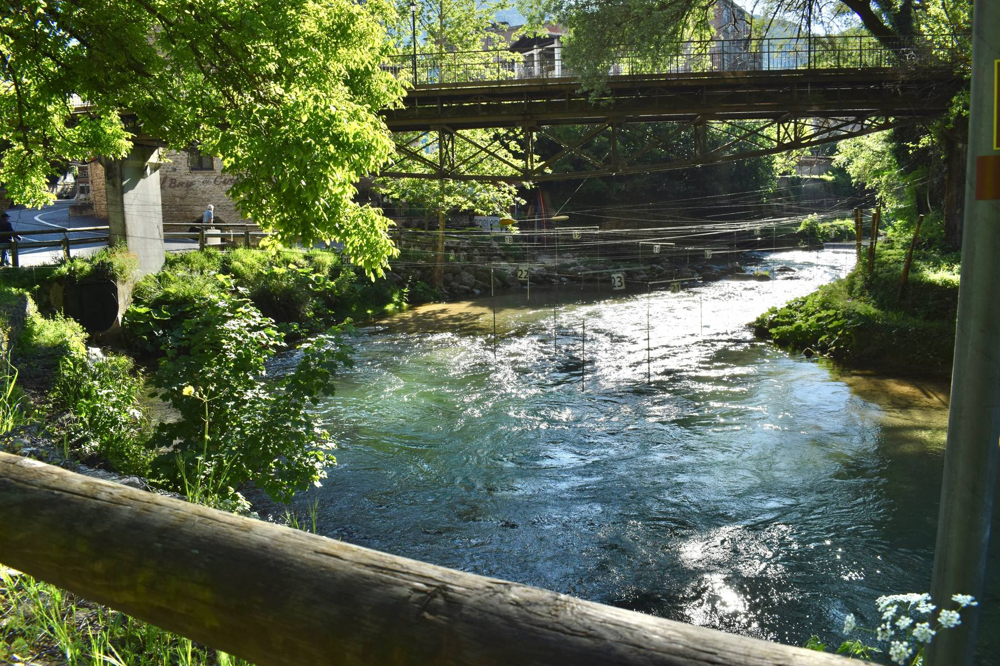
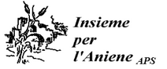

Democratizzazione dei saperi
Offre l'opportunità di partecipare attivamente alla costruzione della conoscenza e a un'attivazione decisionale politica consapevole e informata.
Dal 2021 a oggi
La piattaforma unica dedicata a tutte le attività di monitoraggio civico del fiume Aniene, da parte di chi lo ha vissuto e continua a farlo. Dal 2021 associazioni, volontarie e volontari, scuole, ricercatori e ricercatrici monitorano la qualità dell'acqua dell'Aniene, da Subiaco alla confluenza nel Tevere. Qui trovi il percorso, la metodologia, tutti i dati raccolti in forma aperta, l'interpretazione dei risultati e la condivisione con le istituzioni e le comunità locali.

Le campagne di monitoraggio
Il contesto
L'Aniene è il secondo fiume di Roma per lunghezza (98,5 km) e attraversa 17 comuni. Nasce nei Monti Simbruini, da due rami principali — l'Aniene da Monte Tarino e il Simbrivio da Monte Autore — e scorre verso valle formando il lago di San Benedetto a Subiaco, raccogliendo sorgenti come l'Acqua Marcia tra Agosta e Roviano, per poi formare le cascate di Tivoli e addentrarsi nella pianura romana fino alla confluenza nel Tevere, in zona Ponte Salario.
Il fiume ha una rilevanza storica ed ecologica enorme: ha alimentato acquedotti storici, centrali idroelettriche e i giochi d'acqua delle ville di Tivoli, oltre a costituire la via d'acqua usata in passato per trasportare il travertino a Roma.
Il suo bacino rappresenta un corridoio ecologico fondamentale a nord-est di Roma. Nel tratto urbano, il fiume è tutelato dall'istituzione della Riserva Naturale Valle dell'Aniene (620 ettari). Rispetto al Tevere, le sponde dell'Aniene presentano tratti più selvaggi e meno accessibili, il che da un lato ne preserva l'aspetto naturale, ma dall'altro rende più difficile il controllo del degrado e delle discariche abusive. Iniziative civiche come il Sentiero Parenzio, ad opera dei volontari Retake, dimostrano come la fruizione sostenibile e l'apertura di accessi curati aiutino a presidiare e valorizzare il territorio.
Il percorso
Dalle passeggiate a una rete di monitoraggio
La rete è cambiata di campagna in campagna e con gli anni si è consolidata una rete stabile, che conta sulla partecipazione di diverse associazioni: A Sud, Insieme per l'Aniene APS, Retake Roma Sacco Pastore, A.D.A. APS, Roma Adventure ASD, Il Cammino dell'Aniene, il Collettivo L'Aquila Reale ETS e la Rete Orti in Comune. La supervisione scientifica è di Bruna Gumiero, ecologa fluviale dell'Università di Bologna.

Lo strumento
Il Contratto di Fiume è uno strumento di programmazione volontaria, negoziata e partecipata, volto al contenimento del degrado eco-paesaggistico e alla riqualificazione dei territori dei bacini idrografici. Nati per affrontare in modo integrato e partecipato la gestione dei bacini idrografici, i processi dei Contratti di fiume si declinano in maniera differenziata nei diversi contesti amministrativi e geografici, in armonia con le peculiarità dei bacini e in risposta ai bisogni e alle aspettative della cittadinanza.
L'obiettivo dei Contratti è coniugare la protezione dell'ambiente con lo sviluppo locale: promuovere la tutela della qualità ecologica dei corsi d'acqua, la prevenzione del rischio idraulico e idromorfologico, il ripristino degli ecosistemi e la valorizzazione socio-economica e culturale della valle. Attraverso questo patto formale, i soggetti firmatari si impegnano a realizzare un Programma di Azione condiviso per incentivare l'uso sostenibile della risorsa idrica e raggiungere il «buono stato ecologico» previsto dalle direttive europee sulle acque (2000/60/CE), sulle alluvioni e sulla tutela della biodiversità.
Il Contratto di Fiume Aniene è stato firmato ufficialmente a febbraio 2022, dopo quasi vent'anni di incontri e tavoli partecipati dei quali Insieme per l'Aniene APS è stata tra i principali promotori. È stato sottoscritto da quasi 100 stakeholder localizzati lungo tutta la valle, dalla sorgente alla foce, di cui 31 nel tratto urbano del fiume: un esempio virtuoso di coinvolgimento della comunità locale in un processo di gestione partecipata e trasversale del territorio.
All'interno del programma di azione del Contratto di Fiume Aniene rientrano anche il monitoraggio partecipato svolto con RomaUp, l'organizzazione di attività di educazione ambientale ed educazione civica sul fiume, la diffusione delle conoscenze e il monitoraggio dell'alveo e delle sponde. Anche il Contratto di Fiume del Tevere, per il tratto da Castel Giubileo alla foce, è stato promosso da Agenda Tevere e firmato nello stesso periodo.
Il metodo
Il termine Citizen Science, tradotto come «scienza partecipata», racchiude un concetto ampio. L'Associazione nazionale Citizen Science Italia la descrive come «il coinvolgimento di volontari/e e scienziati/e in attività di ricerca collaborativa, finalizzata alla generazione di nuova conoscenza basata su evidenze scientifiche».
La scienza partecipata ha un ruolo fondamentale in questi progetti, in particolare nell'avvicinare comunità e persone alla cura dei beni comuni, costruire consapevolezza intorno alle matrici ambientali fondamentali, produrre dati e aumentare il patrimonio informativo pubblico. Oltre a essere un sistema prezioso di allerta precoce per segnalare tempestivamente rischi e anomalie alle autorità, i dati raccolti attraverso la citizen science diventano la base per vertenze e istanze di giustizia ambientale e sociale.
Le iniziative di monitoraggio civico non si propongono in alcun modo di sostituire gli enti responsabili, quanto piuttosto di affiancare e in alcuni casi contestare o arricchire le conoscenze ambientali istituzionali grazie alla presenza di dati indipendenti e attendibili.

Offre l'opportunità di partecipare attivamente alla costruzione della conoscenza e a un'attivazione decisionale politica consapevole e informata.
L'«early warning»: metodi scientifici semplificati e kit accessibili permettono di raccogliere dati in tempo reale sul territorio, segnalando criticità che non sempre sono rintracciabili nei controlli istituzionali.
Dal livello individuale a quello sociale e comunitario, i monitoraggi ambientali promuovono sensibilizzazione e consapevolezza ecologica.
La citizen science può costituire la base per istanze rivendicative e legali finalizzate a individuare le responsabilità di chi compromette la qualità dell'ambiente e viola il diritto alla salute.
Il coinvolgimento della comunità permette di porsi obiettivi più ambiziosi, soprattutto nel monitoraggio di lungo periodo, che è spesso difficile da sostenere per singoli enti o ricercatori.
Un percorso di apprendimento continuo, in cui le persone acquisiscono conoscenza e consapevolezza dell'ambiente in cui vivono ed esercitano forme attive di cittadinanza.
È necessario un allargamento dei soggetti autorizzati a partecipare alla definizione e alla soluzione del problema scientifico, partendo da ricercatori e comunità locali, verso quella che viene definita citizen science estrema.
Come lavoriamo
Per la misurazione dei parametri abbiamo scelto strumenti molto semplici ed economici, intuitivi nel loro utilizzo e alla portata di tutti. I campioni di acqua sono prelevati direttamente dal fiume tramite un secchio legato a una fune, molto utile anche per raggiungere i punti più difficili, oppure usando contenitori e pipette sterili nel caso di analisi microbiologiche.
Sul campo misuriamo direttamente i parametri chimico-fisici principali, con dispositivi tascabili HANNA Instruments per temperatura, conducibilità elettrica e pH. Usiamo poi un fotocolorimetro per l'ammoniaca, il tubo di Secchi per la torbidità e le fialette reagenti per nitrati e fosfati. A questi si aggiunge la titolazione di Winkler per l'ossigeno disciolto, fondamentale per la vita acquatica e l'autodepurazione del fiume: è grazie alla sua introduzione che oggi possiamo calcolare l'indice ufficiale LIMeco e confrontare i nostri dati con quelli istituzionali di ARPA Lazio.
Per monitorare la contaminazione fecale e la non balneabilità dell'Aniene effettuiamo inoltre la conta delle colonie di Escherichia coli tramite piastre cromogene Compact Dry EC, incubate per 24 ore a 36 °C. Tutti i rilievi vengono annotati su schede cartacee e caricati sull'app Survey123, alimentando un database aperto e condiviso.
Per fosfati, nitrati e torbidità utilizziamo il kit fornito da Fresh Water Watch Europe, progetto internazionale di citizen science dedicato alla qualità delle acque dolci promosso da Earthwatch, che permette di proiettare i dati raccolti localmente in una banca dati comune, dove i dati dell'Aniene si affiancano a quelli di migliaia di altri gruppi nel mondo.
In breve
Raccogliere dati sulle criticità del fiume e dare segnali di allarme alle istituzioni che hanno il compito di fare monitoraggi periodici e specifici, come ARPA Lazio.
La rete
Le associazioni, gli enti e i sostenitori che hanno preso parte alle campagne di monitoraggio dal 2021 al 2026.

